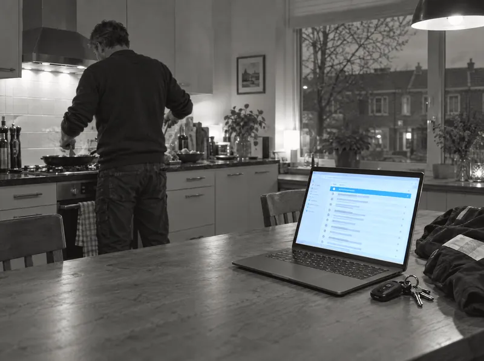

Nooit meer een mail die blijft liggen
Elke e-mail wordt gesorteerd en het antwoord staat klaar. Ook de aanvraag die vrijdagavond binnenkomt. De agent vraagt zelf wat er nog mist. U leest het na en verstuurt.

Klaargezet door uw AI-mailassistent
Offerteaanvraag badkamer
Vrijdag 18:52. Het antwoord vraagt nog om het adres.
Wat uw Support Agent doet
Sorteert vanzelf
Elke binnenkomende e-mail komt automatisch in de juiste map terecht. Geen regels om te onderhouden.
Conceptantwoorden klaar
Voor veelgestelde vragen staat het antwoord al klaar. U controleert en verstuurt.
Vraagt zelf door
Ontbreekt er iets bij een offerteaanvraag? De agent vraagt de ontbrekende gegevens zelf op.
Leert van uw mailbox
Herkent terugkerende vragen en stelt zelf antwoorden voor. U beoordeelt wat de agent voorstelt.
Zelf opgezet in drie stappen
Koppel uw mailbox
Outlook, Gmail of een andere mailbox via IMAP. Daarna vult u aan wat de agent over uw bedrijf moet weten.
Test op uw eigen e-mail
Zie wat de agent met uw laatste 20 e-mails zou doen. Er wordt niets verstuurd of verplaatst.
Zet hem aan
Hij sorteert uw mail en zet elk antwoord klaar als concept. U leest het na en verstuurt het zelf.
Werkt met wat u al gebruikt


Mowi werkt onder meer samen met WooCommerce, Shopify, Lightspeed, Shopware, Magento, bol.com, PrestaShop, Exact Online, Pipedrive, HubSpot, Moneybird, Google Agenda, Calendly en Guestplan.
Voor elke branche anders ingesteld
Dezelfde agent, afgestemd op wat bij uw klanten speelt.
Storing of offerte, meteen herkend
Sorteert elke binnenkomende e-mail in de juiste map, herkent een offerteaanvraag en vraagt zelf de ontbrekende gegevens op, en meldt een storing of spoedgeval direct.
Start gratis Bekijk alle branches op de Templates-pagina →Veelgestelde vragen, meteen beantwoord
Sorteert elke e-mail, schrijft een conceptantwoord voor veelgestelde vragen en houdt afspraakverzoeken apart klaar voor u.
Start gratis Bekijk alle branches op de Templates-pagina →Geen klacht blijft liggen
Sorteert elke e-mail, vraagt zelf het ordernummer op bij een onvolledige vraag, en meldt een klacht direct in plaats van hem te laten liggen.
Start gratis Bekijk alle branches op de Templates-pagina →Reserveringen apart gehouden
Sorteert elke e-mail, schrijft een conceptantwoord voor veelgestelde vragen en houdt reserveringsverzoeken apart klaar voor u.
Start gratis Bekijk alle branches op de Templates-pagina →De eerlijke vergelijking
| Waar u op let | Support Agent | Zelf sorteren | Mailregels | Virtuele assistent |
|---|---|---|---|---|
| Setup | Een paar minuten | Geen setup, wel dagelijks werk | Een middag regels bouwen | Weken werving en inwerken |
| Ook na sluitingstijd | Ja | Nee | Ja, maar star | Nee, kantooruren |
| Leert bij | Ja, uit uw eigen mailbox | — | Nee, vaste regels | Ja, langzaam |
| Kosten | Gratis testen, daarna vanaf €79 per maand | Uw eigen tijd | Gratis, uw tijd om te bouwen | Salaris en inwerktijd |
| Opzegtermijn | Maandelijks opzegbaar | — | — | Vaak een contract |